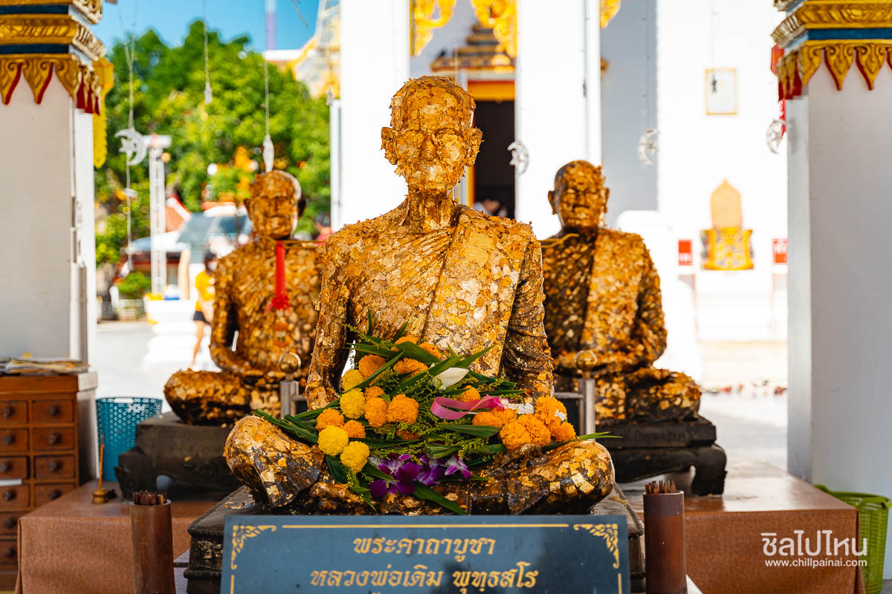

|
 |
 |
 |
|  |
มาถึงนครสวรรค์แล้วสถานที่มากมายที่น่าสนใจ ไม่ควรพลาด ที่กิน ที่เที่ยว คาเฟ่ ให้ได้ไปเช็คอินอีกเพียบ ใครที่มานครสวรรค์และยังไม่รู้จะไปเที่ยวที่ไหน วันนี้เราได้รวบรวม
ที่เที่ยวนครสวรรค์ มาไว้ให้เพื่อน ๆ แล้ว บอกเลยว่าแต่ละที่น่าไปเที่ยวสุด ๆ
นครสวรรค์ที่เที่ยว อีกหนึ่งสถานที่ท่องเที่ยว กับที่เที่ยว วัดคีรีวงศ์ เที่ยวนครสวรรค์ 2 วัน 1 คืน ต้องห้ามพลาดกับการท่องเที่ยวที่ วัดศีรีวงศ์ วัดสวย วัดดัง แห่งเมืองนครสวรรค์ ที่ตั้งอยู่ ตำบลปากน้ำโพ อำเภอเมือง จังหวัดนครสวรรค์วัดที่ตั้งเด่นเป็นสง่า สีทองงดงาม รายรอบไปป่าไม้สีเขียวขจีนานาชนิด ถือเป็นอีกหนึ่งวัดที่มีผู้คนนิยมมาสักการะกราบไหว้บูชา พระจุฬามณี องค์มหาเจดีย์ศักดิ์สิทธิ์ ที่อยู่คู่บ้านคู่เมืองชาวนครสวรรค์มาอย่างช้านาน อย่างต่อเนื่อง ว่าด้วยเรื่องศักดิ์สิทธิ์จึงเป็นที่รู้จะของพุทธศาสนิกชนอย่างกว้างขวาง นอกนี้แล้วยังเป็นจุดชมวิวเมืองนครสวรรค์ได้อย่างสวยงามอีกหนึ่งแห่งเลยก็ว่าได้
วันและเวลาทำการ: 08.00-18.00 น.(เปิดทุกวัน)
Tel:056221633
วัดวรนาถบรรพต หรืออีกหนึ่งชื่อ วัดเขากบ ที่ตั้งอยู่ในเขตพื้นที่ ตำบลปากน้ำโพ อำเภอเมือง จังหวัดนครสวรรค์ อีกหนึ่งวัดที่มีความสำคัญของชาวเมืองนครสวรรค์ วัดเก่าแก่ที่อยู่คู่บ้านคู่เมืองนครสวรรค์มาช้านานวัดวรนาถบรรพต นั้นตั้งอยู่บนเชิงเขากบ ที่รายล้อมไปด้วยธรรมชาติป่าไม้สีเขียวขจี ภายในวัดจะเป็นประดิษฐานพระเจดีย์องค์ใหญ่ที่ถูกสร้างขึ้นในสมัยสุโขทัย พระนอน ที่มีความยาว10 วาเศษ และพระอุโบสถหลังเก่าซึ่งมีรูปปั้นตากบ-ยายเขียดที่หลวงพ่อทองสร้างไว้ด้านหน้าอุโบสถให้ทุกท่านได้ชมสถาปัตยกรรมอีกด้วยนะจ๊ะ หากใครมาเที่ยวนครสวรรค์อย่าลืมที่จะแวะมากราบไหว้สักการะพระเจดีย์ พระนอน เพื่อความเป็นสิริมงคลกันได้ที่ วัดวรนาถบรรพต
วันและเวลาทำการ: 08.00-18.00 น.(เปิดทุกวัน)
Tel:0656336429
เขาหน่อ เขาแก้ว ที่ เที่ยวธรรมชาติใกล้กรุงเทพ ตั้งอยู่ในเขตพื้นที่ ตำบลบ้านแดน อำเภอบรรพตพิสัย จังหวัดนครสวรรค์ สถานที่ท่องเที่ยวแนวธรรมชาติ กับการเป็นผู้พิชิตเขาหน่อ ที่มีวิวทิวทัศน์ที่สวยงามตระการตา เขาหน่อเขาแก้วเป็นภูเขาหินปูนที่ลาดชัน โดยตัวภูเขานั้นจะถูกแบ่งออกเป็น 2 ส่วนกัน นั้นก็คือ ส่วนเขาพระพุทธบาท และ ส่วนเขานางพันธุรัต แต่เมื่อขึ้นไปถึงจุดสูงสุดของยอดแล้ว ทุกท่านจะตะโกนว่า สวยได้เปลืองมาก เพราะวิวบนยอดเขาหน่อนั้น คือสวยงามจริงๆ คุ้มค่ากับเดินขึ้นเขามาจุดชมวิวแห่งนี้จริงๆ หากใครที่ชอบการผจญภัยแนะมาที่ เขาหน่อ เขาแก้ว จังหวัดนครสวรรค์เลย
วันและเวลาทำการ: 08.00-18.00 น.(เปิดทุกวัน)
ฟาร์มแกะทหารช่าง ที่ตั้งอยู่ในเขตพื้นที่ ตำบลกลางแดด อำเภอตะเคียนเลื่อน จังหวัดนครสวรรค์ ฟาร์มแกะทหารช่างนั้นเป็นสถานที่ท่องเที่ยวเชิงเกษตร ที่มีบรรยากาศพื้นที่สีเขียวขจี ที่จะทำให้ทุกท่านได้เพลิดเพลินไปกับธรรมชาติ พร้อมทั้งยังเป็นแหล่งเรียนรู้เกี่ยวกับเศรษฐกิจพอเพียงให้เหล่าน้องๆ หนูๆ ได้ศึกษากันอีกด้วยน และยังมีกิจกรรมให้น้องได้ร่วมสนุกสนานไปกับการให้อาหารน้องแกะด้วยรวมไปถึงกิจกรรมต่างๆให้ได้ร่วมสนุกสนานแบบครอบครัวให้ได้มีกิจกรรมสันทนาการได้อย่างมีความสุขอีกด้วย
วันและเวลาทำการ: 08.00-16.00 น.(เปิดทุกวัน)
Tel:0620725292
ตลาดร้อยปีชุมแสง ตลาดเก่าอายุนับร้อยปี ตั้งอยู่ในพื้นที่ ตำบลชุมแสง อำเภอชุมแสง จังหวัดนครสวรรค์ ตลาดร้อยปีแห่งนี้นั้น ตั้งติดชุมชนริมน้ำน่านสุดเก่าแก่ และมีความคลาสสิค สมัยก่อนตลาดแห่งนี้นั้นเคยเป็นศูนย์การค้าการขายข้าวที่สำคัญ และมีชาวจีนอพยพมาตั้งถิ่นฐาน ค้าขายอยู่ที่นี่เป็นจำนวนมาก เนื่องจากมีสถานีชุมแสง เป็นเส้นทางรถไฟสายเหนือวิ่งผ่านจึงเป็นแหล่งการค้าขายที่ดี ตลาดร้อยปีชุมแสงจะมีมนต์เสน่ห์ตรง ตึกลาบ้านช่องเป็นเรือนไม้โบราณอายุกว่า 100 ปี ที่เป็นรูปแบบสไตล์จีนดั้งเดิม ที่หาชมได้ยากแล้ว หากใครอยากมาตามรอยละคร กรงกรรม ก็จะมีชื่อตรอกเรณู ซึ่งเป็นสถานที่ทำละครชื่อดัง ที่สามารถเปิดให้นักท่องเที่ยว เยี่ยมชมและถ่ายรูปเก็บไว้เป็นที่ระลึกได้อีกด้วย
วันและเวลาทำการ: 06.00-18.00 น.(เปิดทุกวัน)
Tel:0932755836
สถานที่แรกที่ไม่ควรพลาด วัดสวย วัดดัง แห่งเมืองนครสวรรค์ วัดศรีอุทุมพร วัดแห่งนี้นั้นตั้งอยู่บนพื้นที่ ตำบลหนองกรด อำเภอเมืองนครสวรรค์ จังหวัดนครสวรรค์ ถือเป็นอีกหนึ่งวัดที่เป็นที่เคารพบูชาของชาวนครสวรรค์เพราะด้วยเป็นวัดที่ หลวงพ่อจ้อย เกจิอาจารย์ชื่อดัง ที่ใครๆต่างต้องรู้จักท่านเป็นอย่างดี เจ้าอาวาสองค์ก่อน ก่อนที่ท่านจะลาสังขารไป ปัจจุบันทางวัดอุทุมพรได้เก็บสรีระสังขารของหลวงพ่อจ้อยที่ไม่เน่าเปื่อยไว้ในมณฑป
วันและเวลาทำการ: 06.00-18.00 น.(เปิดทุกวัน)
Tel:056286027

ที่เที่ยวที่เป็นเอกลักษณ์นครสวรรค์แห่งใหม่ พาสาน อาคารที่แสดงถึงสัญลักษณ์ต้นแม่น้ำเจ้าพระยา ซึ่งชื่อ พาสาน นั้นมีที่มาจากคำว่า ผสาน ซึ่งแปลความหมายได้ว่าการนำพาผู้คนต่างถิ่น ต่างวัฒนธรรม มาผสมผสานเป็นอันหนึ่งอันเดียวกัน ซึ่งตัวอาคารพาสานนั้นจะมีลักษณะเป็นทรงโค้งสีน้ำตาลกลมกลืน ที่ตั้งอยู่บริเวณรอบๆ หญ้าสีเขียวขจีซึ่งเป็นการออกแบบตัวอาคารให้มีความทันสมัย เป็นที่สะดุดตาของเหล่านักท่องเที่ยว และยังมีการออกแบบตัวอาคารให้สามารถคงอยู่ในสภาพหากมีน้ำขึ้นสูงในช่วงฤดูฝนหรือฤดูน้ำหลาก ตัวอาคารพาสานจะเป็นสถาปัตยกรรมเชิงสัญลักษณ์
วันและเวลาทำการ: 06.00-20.00 น.(เปิดทุกวัน)
Tel:056221811
เป็นสัญลักษณ์ของจังหวัดนครสวรรค์เลยก็ว่าได้ อุทยานสวรรค์ สถานที่ท่องเที่ยวนครสวรรค์ ที่ตั้งอยู่ ตำบลปากน้ำโพ อำเภอเมือง จังหวัดนครสวรรค์ สวนสาธารณะขนาดใหญ่ของจังหวัดนครสวรรค์ที่มีจุดเด่นเป็นสง่านั้นก็คือ มังกรสวรรค์ สัญลักษณ์เมืองนครสวรรค์ทั้งตั้งเด่นเป็นสง่าอยู่กลางสวนสาธารณะ ที่รายล้อมไปด้วยมังกรตัวเล็ก 4 ตัว ตัวฐานเป็นรูปก้อนเมฆที่มีลวดลายอันสวยงาม ถือเป็นสถาปัตยกรรมที่เป็นเอกลักษณ์จังหวัดนครสวรรค์ที่ต้องไปถ่ายรูปเก็บไว้เป็นความทรงจำสักครั้ง
วันและเวลาทำการ: 04.00-21.00 น. (เปิดทุกวัน)
9.ศาลเจ้าพ่อ เทพารักษ์-เจ้าแม่ทับทิม
ที่เที่ยวในนครสวรรค์ ที่ตั้งอยู่ในพื้นที่ ตำบลปากน้ำโพ อำเภอเมือง จังหวัดนครสวรรค์ ถือเป็นสถานที่ท่องเที่ยวที่ชาวเมืองนครสวรรค์ต่างนิยมพากันมาสักการะบูชาเสริมความเป็นสิริมงคลแก่ชีวิตและยังเป็นศูนย์รวมน้ำใจของชาวตำบลปากน้ำโพอีกด้วยนะจ๊ะ ศาลเจ้าพ่อเทพารักษ์เจ้าแม่ทับทิม เป็นศาลที่ตั้งอยู่บริเวณริมแม่น้ำเจ้าพระยา ตัวศาลจะเป็นสถาปัตยกรรมจีนสีแดงสดตั้งเป็นสง่า มีการผสมผสานโครงสร้างปูนและไม้ ให้มีความสวยงามและเป็นเอกลักษณ์ ภายในด้านในจะประดิษฐาน แท่นบูชาเทพยาดาฟ้าดิน องค์เทพเจ้าบ๊นเถ่ากง เทพเจ้ากวนอู เจ้าแม่ทับทิม ผู้คนส่วนใหญ่หากมาสถานที่แห่งนี้นั้น มักขอพรให้เจ้าแม่ทับทิมคุ้มครอง มีโชคลาภ และเป็นสถานที่แก้ปีชงอีกด้วย
Tel:0656276599
10.อาคารแสดงพันธุ์สัตว์น้ำบึงบอระเพ็ด (อควาเรียม)
เที่ยวนครสวรรค์ ต้องห้ามพลาดกับที่เที่ยวที่มีชื่อว่า อาคารแสดงพันธุ์สัตว์น้ำบึงบอระเพ็ด (อควาเรียม) ที่เที่ยวในนครสวรรค์ บึงบอระเพ็ด ทะเลสาบน้ำจืดขนาดใหญ่ที่สุดของประเทศไทย ที่ครอบคลุม 3 อำเภอของจังหวัดนครสวรรค์ นั้นก็คือ อำเภอเมือง อำเภอท่าตะโก และอำเภอชุมแสง สถานที่ท่องเที่ยวแห่งนี้จึงถือเป็นสถานที่ท่องเที่ยวธรรมชาติของชาวจังหวัดนครสวรรค์ที่ต่างพากัน มาเที่ยว มาพักผ่อนหย่อนใจ ที่นี่ในช่วงวันหยุดสักหนึ่งวัน พร้อมยังมี อาคารแสดงพันธุ์สัตว์น้ำบึงบอระเพ็ด หรือ อควาเรียมน้ำจืดขนาดใหญ่ ที่จัดแสดงเกี่ยวกับ พืชพันธุ์ สัตว์น้ำจืด แห่งนี้ให้ทุกท่านได้เพลิดเพลินกันอีกด้วย และยังเป็นแหล่งเรียนรู้สำหรับน้องๆ หนูๆ ได้ดีเลยทีเดียว
วันและเวลาทำการ: 10.00-18.00 น.(เปิดทุกวัน)
Tel:056274522